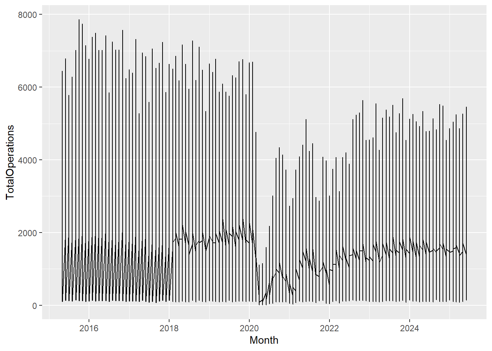
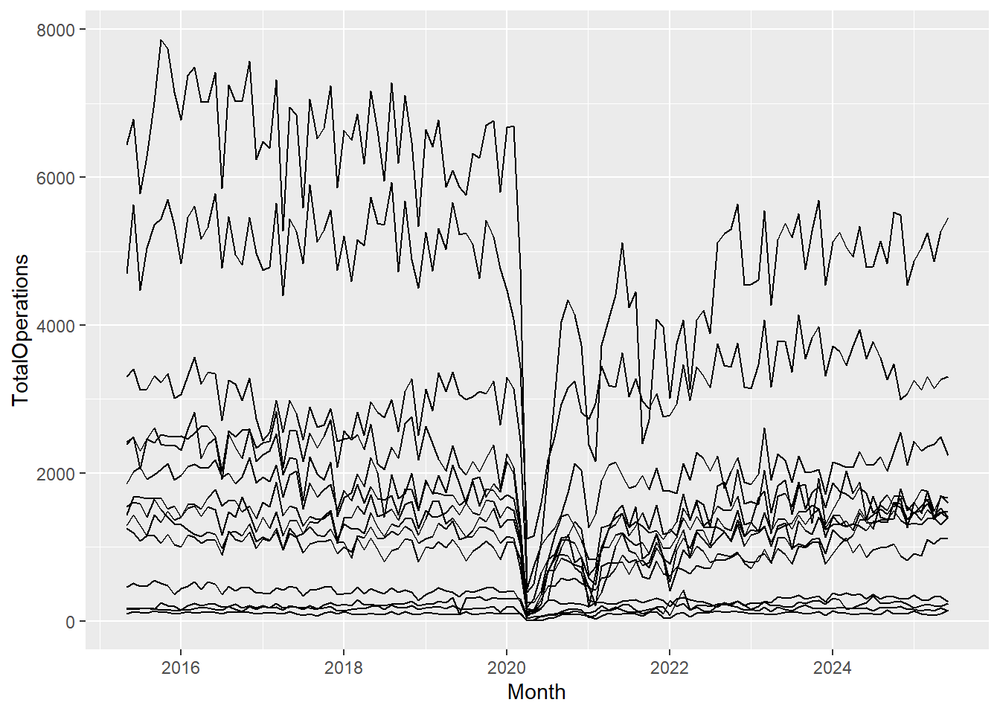
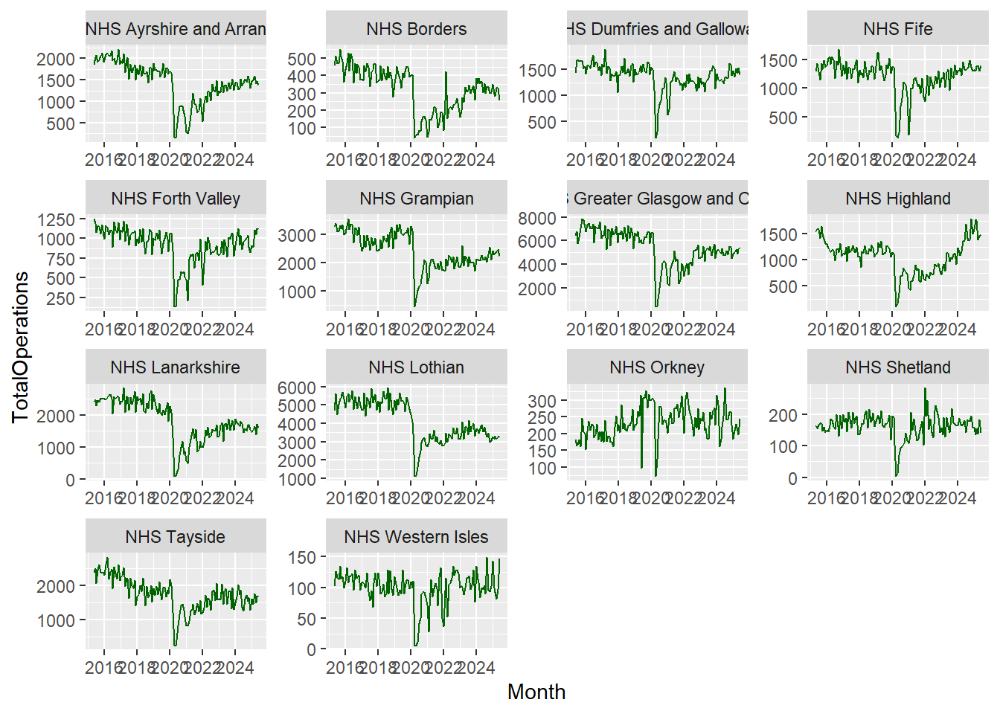

# Load packages
library(tidyverse)
# library(lubridate)
## library(lubridate) is only necessary if you are using Noteable, the newest version of tidyverse includes lubridate. If using Noteable, delete the # comment in the line above
# Read in the cancellations dataset
cancelled_raw <- read_csv("https://www.opendata.nhs.scot/dataset/479848ef-41f8-44c5-bfb5-666e0df8f574/resource/0f1cf6b1-ebf6-4928-b490-0a721cc98884/download/cancellations_by_board_august_2024.csv")
hb <- read_csv("https://www.opendata.nhs.scot/dataset/9f942fdb-e59e-44f5-b534-d6e17229cc7b/resource/652ff726-e676-4a20-abda-435b98dd7bdc/download/hb14_hb19.csv")
cancelled <- cancelled_raw %>%
# Join cancelled to hb
left_join(hb, by = c("HBT" = "HB")) %>%
# Select the variables we're interested in
select(Month,
HBName,
TotalOperations,
TotalCancelled) %>%
# Filter out/remove NA values (which were the code for a specific hospital) from HBName (SB0801 before the join)
filter(HBName != "NA") %>%
# Reformat the month column to separate out year, month, day
mutate(Month = ymd(Month, truncated = TRUE))Plotting data with ggplot2
The ggplot2 package
Plotting in R is great because your code will always be there for you to check and reproduce what you did, and even better than that, you’ve already seen that you can start creating nice-looking plots straight away with just a few lines of code.
It’s extremely satisfying to be able to produce multiple plots with consistent formatting by just changing one line here or there, and not having to remember what or where you clicked in a menu!
The R package we use most frequently for plotting is ggplot2, and it’s part of the tidyverse which you’ll now be starting to get quite familiar with.
Let’s start by looking at the main commands you need to know in ggplot2 and how to use these commands in order to display your data and format your plot the way you want.

# Filter out/remove NA values (which were the code for a specific hospital) from HBName (SB0801 before the join)
Copy, Copy, Copy
After opening a new script or RMarkdown file, the next thing we have to do is import our data.
Since we’re using the same data we have used before, the Cancelled Planned Operations dataset from Public Health Scotland, we can just copy some of our previous code (look back at Week 2, topic 6). This is one of the great things about coding!
You’ll spend a lot of time copying previous code you’ve written, copying code you’ve Googled on the web, or copying a colleague’s code. Don’t worry about trying to learn commands from memory. This will happen naturally for the ones you use most frequently, and for the rest, there is always Google or the Help tab!
Copy and paste the following code into your R Script or into a code chunk in your RMarkdown file.
We don’t need to load ggplot2 separately because it is loaded as part of the tidyverse set of packages.
Having run that code, you should now see three objects in your environment tab. The two initial datasets we read in, and then our tidied dataset, cancelled.
Check the data
Click on cancelled to check that it has been read in ok. Remember we can do this by clicking on the object in the Environment tab and it will open in a new tab beside your script, looking just like a spreadsheet.
We can also check the range of our data to see what time span is covered:
Here we are using the year() function from lubridate to extract only the year from the part of the date in the Month variable.
You should see the following output
cancelled %>%
distinct(year(Month))# A tibble: 11 × 1
`year(Month)`
<dbl>
1 2015
2 2016
3 2017
4 2018
5 2019
6 2020
7 2021
8 2022
9 2023
10 2024
11 2025We can use a similar bit of code to look at the Health Boards:
From which you should see the following output
cancelled %>%
distinct(HBName)# A tibble: 14 × 1
HBName
<chr>
1 NHS Ayrshire and Arran
2 NHS Borders
3 NHS Dumfries and Galloway
4 NHS Fife
5 NHS Forth Valley
6 NHS Grampian
7 NHS Greater Glasgow and Clyde
8 NHS Highland
9 NHS Lanarkshire
10 NHS Lothian
11 NHS Orkney
12 NHS Shetland
13 NHS Tayside
14 NHS Western Isles Notice that in both of these chunks of code, we have not assigned the value to an object. That is, we have not given them names using the assignment operator <- and so they have not appeared in our environment.
That’s because we’re just doing a quick check. This code is not particularly relevant to our plotting or analysis code. So we can either write and run it in a code chunk, then delete it if we don’t want to keep it there, or we can run it in the console so that it doesn’t get saved in our RMD file. Either is fine.
The core elements
The Elements of a ggplot
The first command you’ll need for creating any type of plot is the command ggplot(). The “gg” in ggplot stands for “grammar of graphics” and it has to do with the layering framework which we use to build up our plots.
We’re familiar with the grammar of the English language, which refers to the structure of the language and the rules we use to construct meaningful sentences. Similar concepts have been applied to plotting with ggplot2.
There is a structure of layers, a bit like the adjectives, nouns, and verbs, in the English language, and then there are the rules for how we assemble these layers (also called aesthetic mappings).
We’ll look in more depth at how these elements interact later in this topic, but for just now it’s worth noting that this setup makes it a lot easier to produce informative plots in R.
There are 7 main elements or layers we can use in our plots, and 3 of these are essential, without which, the plot just won’t work. We’ll explore the essential elements first, then go on to look at a few additional ones too.
The 3 essential elements are:
the data - fairly obvious, without this we wouldn’t have a plot!
the aesthetics - how we map our data onto the canvas (e.g., x and y variables).
the geometrical objects - the type of plot we want to make, (e.g., scatter, bar, line, etc.).
Some of the non-essential elements include:
a facet layer - allows us to subset our data so that we can view multiple plots side by side, and arranged by category.
a theme layer, which will provide the finishing touch to make our plots look lovely.

The Canvas (data and aesthetics)
Let’s start with the plotting function ggplot() which lets R know we are about to create a plot. And we’ll specify which variables we want to display on the x and y axes. Copy and paste the following code below the last bit of code in your script:
cancelled %>%
ggplot(aes(x = Month, y = TotalOperations))A blank canvas should have appeared in your Plots tab or under your code chunk if you have your output showing inline in RMarkdown (the default). This is the first layer in our plot and lets us know… that R knows… that we want to create a plot, but there are no data points yet.
the data cancelled is being piped into our ggplot() function, the starting point for all our plots
the aesthetics are present within the aes() function letting R know what we want on the x and y axes
the geometrical objects layer is missing!
Without the geometrical layer, R doesn’t know what type of plot to make.
The Geoms
We use, what are called, geoms (short for geometrical objects or geometries) to let R know the type of plot we want.
To add a layer in ggplot2, we have to make sure to add a + sign at the end of each line. This + sign behaves in a very similar way to the %>% operator we are already familiar with, and indeed there has been some discussion surrounding the development of the ggplot2 package, as to whether the %>% should be used instead of the + but for various reasons the + remains. We just need to remember that everything after the ggplot() function needs a + sign.
Let’s add a geom, and since we’re looking at changes over time, let’s add a geom to create a line graph, geom_line():
cancelled %>%
ggplot(aes(x = Month, y = TotalOperations)) +
geom_line()
Now we have a complete plot, with only 3 short lines of code! But, our lines don’t look right. That’s because for each date in our dataset, we have observations or values for 14 different Health Boards, and ggplot2 joins the points for all of these Health Board values first before moving on to the next date and so forth. To correct this, all we need to do is add a group mapping within our aes() function. This lets R know that each category within the specified group gets its own line:
cancelled %>%
ggplot(aes(x = Month, y = TotalOperations, group = HBName)) +
geom_line()
Now we have a complete plot, with only 3 short lines of code! But, our lines don’t look right. That’s because for each date in our dataset, we have observations or values for 14 different Health Boards, and ggplot2 joins the points for all of these Health Board values first before moving on to the next date and so forth. To correct this, all we need to do is add a group mapping within our aes() function. This lets R know that each category within the specified group gets its own line:
cancelled%>%
ggplot(aes(x = Month, y =TotalOperations, group =HBName)) +
geom_line()
There are various geoms that we can use, and we’ll cover these in more detail later in the topic. For example, we have geoms for bar charts, line plots, heat maps, scatter plots, box plots, and density plots. You name it, there’s probably a geom for it! There are currently at least 40 geoms from which to choose!
The aesthetics: Inside and outside
The Aesthetics - Outside
The aesthetics is where all the cool stuff happens in ggplot2. This is where the values in our columns (our variables) are converted into visual scales, be that x- or y-axis scales, or colour or size scales. The aes() function allows us to access and visualise large amounts of information quickly and efficiently.
cancelled %>%
ggplot(aes(x = Month, y = TotalOperations, group = HBName)) +
geom_line(color = "darkgreen")What we can include or not include within the aesthetic argument however, is sometimes slightly confusing, and an argument such as colour, which we see here, has a slightly different purpose depending on where it appears in our code, so let’s dive a little bit deeper into this.
Aesthetic-type arguments, e.g. line type and colour, can be specified both inside, and outside of the aesthetic brackets ( aes() ), but they have different roles to play in the different settings.
In the code above we can see that the colour aesthetic is set to “darkgreen” which lets R know that we want all of the lines to be dark green.
R understands a lot of colours by their name, so try out a few and see how good it is! Change the code above to be a color of your choosing - but do not forget the quotation marks around the name (demarking a character string). For a more nuanced choice of colours, R also understands hex (hexadecimal) codes so you have a full range of colours at your fingertips. More on colour palettes later.
Coming back to our code example above, we can see that the colour argument is not within the aesthetic brackets, it’s included instead, inside geom_line(). This is because it has been set to a single value (“darkgreen”), and so that colour is the same for all points in the dataset, regardless of the values in the dataset.
If we wanted our data points to have a different shape or colour, depending on the values in the dataset, we would have to pass colour as an aesthetic argument, inside the brackets.
The Aesthetics - Inside
At the moment, our plot is very busy, it’s hard to distinguish between the different Health Boards and it would be useful to make them more visible by assigning each a different colour, so let’s add colour = HBName within our aesthetic mapping:
cancelled %>%
ggplot(aes(x = Month, y = TotalOperations, colour = HBName)) +
geom_line()Notice that we no longer need to specify group = HBName in our aesthetics because the colour attribute is both grouping and colouring each category within HBName.
To summarise, when our aesthetic arguments (colour, line type, etc.) appear:
within aes(), the argument changes based on the values of the variable
outside aes(), the argument is given a single value and doesn’t change based on the values of the variable
This ability to “map” within the aesthetic function allows us to visualise variations across multiple variables simultaneously.
Notice that as well as assigning different colours to the different Health Boards, ggplot2 was also clever enough to create a legend automatically without us even telling it to do so!
Aesthetics galore!
We’ve seen how we can map a variable to color, to distinguish between different categories. Depending on the type of plot we are using, we can also map a variable to many other aesthetic arguments. For example, line thickness, the size of points, the shape of points, and how transparent they are (useful for overplotting in busy graphs). ggplot2 gives you a lot of control over these and you can find out more by searching for aes() in the help tab and clicking on the ggplot2-specs vignette, or by clicking here.
Our plot now has colour but it’s still looking quite crowded so let’s explore how we can improve the presentation further.
Additional elements: Facets and themes
Faceting
Faceting provides yet another dimension to our data and allows us to compare values within a plot and between plots, making it easier to see what’s going on.
Let’s take a look at the code for faceting:
cancelled %>%
ggplot(aes(x = Month, y = TotalOperations)) +
geom_line(colour = "darkgreen") +
facet_wrap(~HBName)The function facet_wrap() takes a formula argument, which just means that we need to remember to use the tilde sign (~) before the variable we’re interested in.
When we use facet_wrap(), we’re creating separate graphs subset by the specified variable (in this case Health Board). It’s a way of easily splitting up our data into the various levels, in a variable with categories.
After faceting, we can see that it’s very difficult to see the trends for the smaller Health Boards as all of the axes scales have been aligned. This can be useful when comparing categories but in this dataset, we might be interested in the overall trends across each individual Health Board.
To change this there is an argument within facet_wrap() which makes our axes “free”! Let’s add that in:
cancelled %>%
ggplot(aes(x = Month, y = TotalOperations)) +
geom_line(colour = "darkgreen") +
facet_wrap(~HBName, scales = "free")
Now we can see very similar trends across all Health Boards concerning the recent drop in the total number of operations in 2020 and an increase around 2021.
Themes
The default plot theme for ggplot2 has a grey background, but you do not have to be stuck with this, there are endless options for customising your plots, but one way you can do this quickly is by using ggplot2’s ready-to-go themes.
cancelled %>%
ggplot(aes(x = Month, y = TotalOperations)) +
geom_line(colour = "darkgreen") +
facet_wrap(~HBName, scales = "free") +
theme_bw()In the code above you can see that we have added another line of code, theme_bw()which calls on ggplot2’s black-and-white theme.
The theme layer controls all of the visual elements which are not directly related to the interpretation of the values in your data. So it doesn’t control the colours of your data points, but it can control the background colour on which your data points lie.
There are many built-in themes in ggplot2 and you can explore them and discover the ones that you like best.
The nice thing about the layering structure of ggplot2, is that you can take a default layer, like theme_bw(), and then add your own modifications on top of it, by calling the theme() command, so your plots are entirely customisable.
You can find out more about the generic theme()command in the help menu of RStudio, where there are endless options for customisation.
Geoms galore!
So far in this topic, we’ve explored some of the options we can use in geom_line() the geom used to create line graphs, but there are many more geoms to choose from.
Here are some of the main ones you’re likely to find useful in your analyses and reporting:
geom_point() and geom_jitter() are scatter plots and are quite similar. geom_jitter() can be useful when you have over-plotting. It shifts overlapping points to the side slightly, making it easier to see the density in areas of clustering.
geom_bar() and geom_col() are also very similar but with a few slight differences to do with how data is counted. If you are interested in these counting differences, read on. If not, you can skip the following paragraph.
If you want the height of the bars to represent values in the data, use geom_col(). If rather, you would like the height of the bar to be proportional to the number of cases in each group, use geom_bar(). On a more technical note, this is because geom_bar()uses stat_count() by default meaning it counts the number of cases at each x position, while geom_col() uses stat_indentity() by default meaning it leaves the data as it is.
geom_histogram() is very useful for looking at the distribution of your data, and good for detecting any unusual observations or outliers. A histogram is used to visualise the distraction of a single continuous variable.
Note: We wouldn’t normally use a histogram to explore time-series data in this way, but we’ve kept the same dataset for consistency.
geom_boxplot() is another useful plot for seeing how your values are spread out, particularly if you’re comparing a number of variables together or wish to compare between multiple groups.
Boxplots are a standardized way of showing the distribution of data based on a five-number summary:
minimum
first quartile (Q1)
median
third quartile (Q3)
maximum.
The “box” shows where the middle portion of the data is: the interquartile range (IQR).

If we would like to add labels or text to our plots, in addition to points and lines, or even to replace points, we can use geom_label() and geom_text().
An intentional omission…
You may have noticed that one of the most common, and controversial, types of charts has not yet been discussed: the pie chart.
While it is possible to make pie charts in R, we will not be learning how to do so in the course. In fact, I hope to convince you that you should not even want to know how to make one! Pie charts are what we can consider bad by definition. A pie chart is a circle (or pie) divided into sections (slices of the pie) that represent a portion of the whole. Nothing offensive there. However, the issue is that humans are not good at reading and distinguishing angles. By definition, they are not human-readable and certainly not a tool to tell a data story.
Yan Holtz has a wonderful, and succinct, post called The issue with pie chart that I would recommend reading if you need more evidence.
Selecting an appropriate geometry
There are many factors to consider when selecting the geometry or type of plot to make. Most importantly, you need to first consider your data and what options are available to you, reflecting on questions such as:
what data types are my variables of interest (e.g., numeric/continuous, factor/categorical, etc.)?
how much, if any, data is missing from my variables of interest?
what format is my data in, is it suitable for plotting?
what is the goal of the visualisation (e.g., to show change over time, to compare values between groups, to show how data is distributed, to show a part-to-whole composition, etc.)
There is a wonderful web page called From Data to Viz (also by Yan Holtz) which can help you in this decision making process. Data To Viz serves as a comprehensive guide to chart types, organized by the format of the data you have. The web page effectively functions as a decision tree to help guide to showing actionable insights in your data visualisation. What I enjoy the most is that once you have decided on a chart type, there are recommendations and warnings to consider around that chart type as well as links to the R Graph Gallery with R code (largely ggplot2 and its extensions) and an accompanying explanation!
Optional: Practice üë©‚Äçüíª
If you are feeling confident, why not see if you can reproduce the following plots?
Think of the different elements needed to recreate the plots and use the materials in this topic to assist you! If you are struggling to know where to begin in recreating either plot, I would suggest moving on to the Plotting Practice Document in the next topic and then returning to this task.
The plots below are quite complex, so do share your results on the discussion board if you are able to replicate parts of them! We can then all learn from each other the different ways one could approach the tasks. Feel free to post on the discussion boards if you are having problems reproducing either plot below, or if you have any questions (such as how the plots above were made where the code is not shared)!
Plot 1
Hint: You will need to use the dplyr::mutate() function, and some functions from the lubridate package!
Plot 2
Hint: You will need to use the dplyr::mutate() function, and some functions from the lubridate package! Remember that functions typically have arguments to help you customize different things.
Hint 2: as we have discussed, ggplot2 works in layers, which means you can layer multiple elements on top of each other!
Optional: Data visualisation using ggplot2
Data visualisation in R, an introduction with ggplot2
The following video is a recording from a guest lecture by Dr Sam Tyner introducing data visualisation in R using the ggplot2 package.
Here is a Link to Dr Tyner’s slides.
The code used to produce the slides is available on GitHub.
On the penultimate slide, Dr Tyner lists many links for some additional resources, which are copied below for your convenience.
Thomas Lin Pedersen’s (one of the current maintainers of ggplot) ggplot2 webinar: part 1 and part 2
Examples of Extensions
Domain Specific
Appearance customisation
Optional: Creating a line graph in ggplot2
Data Visualisation Demonstration in R
In the video below, Dr Holly Tibble, Chancellor’s Fellow in Medical Informatics at the University of Edinburgh will demonstrate how to plan, create, and describe a simple visualisation in R for asthma deaths in the UK throughout the year, between 2011 and 2012.
Here is a Link to the R script and Link another to the transcript.